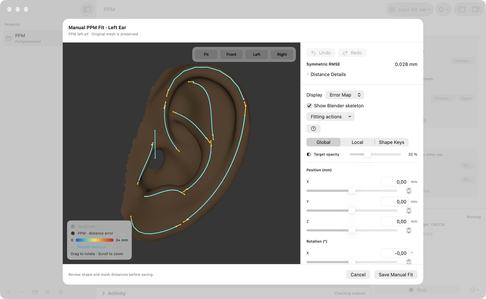
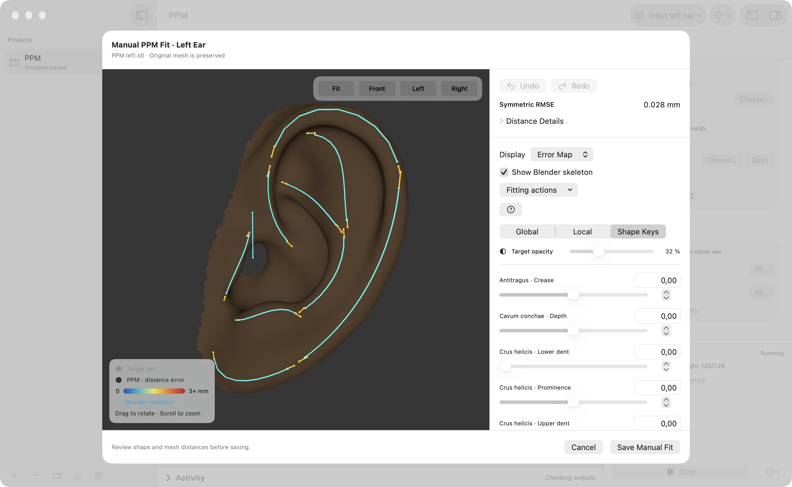

USER GUIDE / MANUAL PPM FITTING
Fit a parametric ear model.
Adjust a parametric pinna model (PPM) against your ear mesh, inspect the distance error, and save a fit for simulation.
Open a fit
In Project Settings, find Manual PPM Fit and choose Fit… for the left or right ear. A source mesh must be available for that side. The original mesh is preserved.
1. Match the whole ear
Start in Global. Adjust position in millimeters, rotation in degrees, and scale to align the model with the target. Drag to rotate and scroll to zoom; use the camera controls to inspect different directions.


2. Refine local anatomy
Switch to Local and expand a control group to adjust its bone parameters. Enable Show Blender skeleton to see the posed bones through the surface. For a right ear, the model is mirrored across Y; control axes follow the template.

3. Adjust shape keys
Use Shape Keys for the remaining shape controls after global and local fitting. Changes update the preview automatically. Undo and Redo let you compare adjustments; Reset to Template starts the model controls over.


4. Inspect the fit
Choose Overlay, Target, Error Map, or Hidden from Display. Target opacity helps reveal the model underneath. The error colors run from zero to 3+ mm.
Review Symmetric RMSE and expand Distance Details for additional statistics. These are nearest-vertex distances: check the anatomy visually as well as the numerical fit.
5. Save and use it
Choose Save Manual Fit, then enable Use saved manual fits in Project Settings to use fitted geometry for preprocessing. Sides without a fit retain their current preprocessing source. If the source changes, refit that side; the settings panel reports when a saved fit is no longer current.